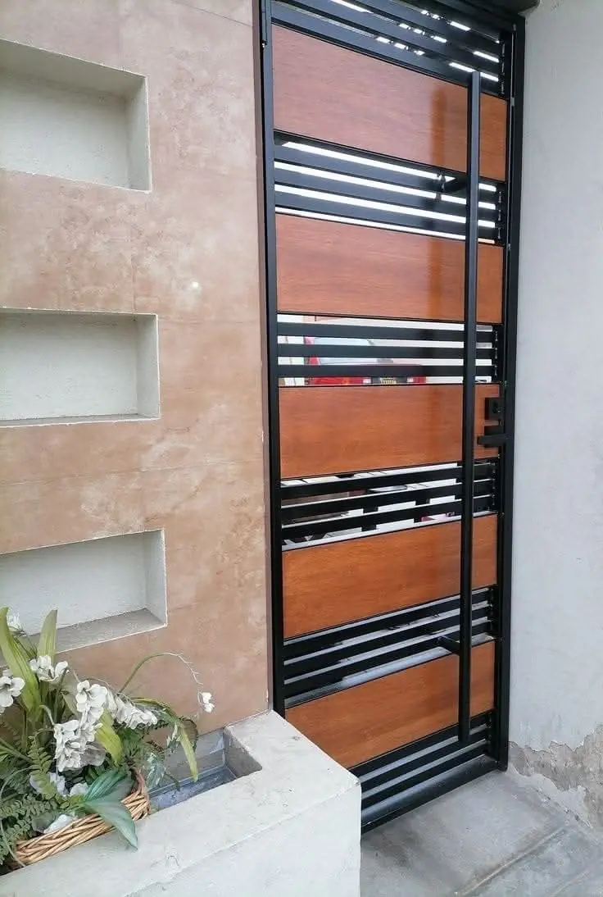

Nuestro taller de herrería está en Playa del Carmen, y en la herrería arquitectónica es donde más se nota: puede ver las piezas antes de terminarlas, los cambios toman días y los instaladores están a minutos. Fabricamos escaleras flotantes para villas de Playacar y Corasol, barandales de vidrio e inoxidable para penthouses y azoteas del centro, pérgolas y celosías para terrazas y portones para residenciales en todo Playa.

Revise escaleras y portones en nuestro taller de Playa antes de pintarlos e instalarlos.
Escaleras flotantes y escultóricas para villas de Playacar, Corasol y Mayakoba.
Barandales de vidrio e inoxidable 316 para azoteas y balcones del centro.
Pérgolas de acero y aluminio para terrazas, rooftop bars y albercas.
Portones automáticos que cumplen los reglamentos de Playacar, Corasol y otras comunidades.
Ajustes, reparaciones y mantenimiento con un equipo basado en Playa.
La herrería arquitectónica está llena de decisiones: peralte y huella de la escalera, perfil del barandal, acabado, cómo se encuentra el portón con el muro. Como la fabricamos en nuestro propio taller de Playa del Carmen, arquitectos y propietarios pueden ver prototipos, aprobar acabados en piezas reales y cambiar detalles sin esperar fletes. La instalación y el servicio posterior vienen del mismo equipo.
Playacar, Corasol y Mayakoba regulan portones, barandales y pérgolas visibles desde la calle; preparamos las solicitudes con planos y muestras. Cerca de la playa usamos inoxidable 316 y aluminio marino; en azoteas las pérgolas se anclan contra succión y drenan sin dañar la impermeabilización.
| Elemento | Uso típico en Playa | Instalado (MXN) |
|---|---|---|
| Escalera flotante / caracol | Villas en Playacar, Corasol | $42k–$280k |
| Barandal de inoxidable 316 | Penthouses del centro | $4,300–$8,500 / m |
| Barandal de vidrio sin marco | Azoteas, balcones | $6,200–$11,500 / m |
| Pérgola | Terrazas, rooftop bars | $4,300–$9,000 / m² |
| Portón automático | Residenciales | $55k–$230k |
Páginas útiles: Herrería Arquitectónica — Riviera Maya · Mismo servicio en Cancún · Estructuras Metálicas en Playa del Carmen · Techumbres y Arcotechos en Playa del Carmen · Entrepisos y Ampliaciones en Playa del Carmen
Véala antes de que se instale. Respuesta en 2 minutos.
Cotizar por WhatsAppSu opinión ayuda a otros propietarios a decidir, y a nosotros a mejorar.
Escribir una reseñaVer reseñas en Google